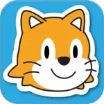
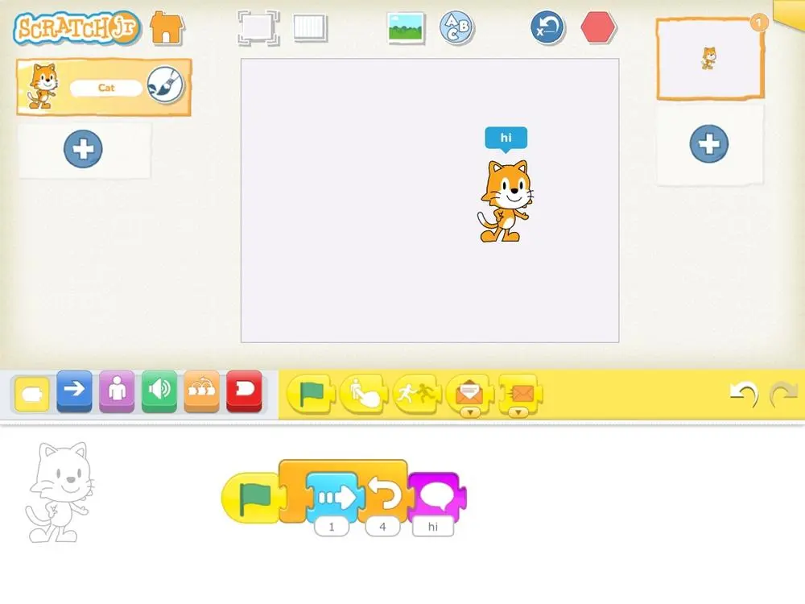
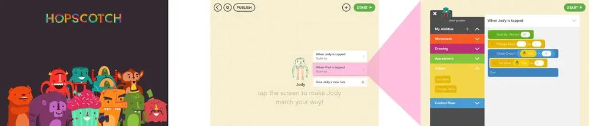

iPads are kid magnets . Why not take advantage of the animal magnetism of your iPad to teach some coding instead of tapping Smurf, Simpsons or FarmVille characters? There are some great apps that teach real programming skills out there, while making it fun and inviting. Dust off your old Kindle – the kids are going to requisition your iPad to learn valuable National Curriculum key stage skills!
This series of posts looks exclusively at software available for recent iPhones, iPads, and iPod devices, running iOS 6 or later. While some of these (or similar) apps are available for Android, OSX and Windows machines, they’re outside the scope of this article. With that out of the way…
Despite Apple’s policy of not encouraging programming environments on iOS, a few loopholes have been exploited in the last few years. No professional developer is going to ditch their computer for a tablet, and this is reflected in the App Store; what it has done, however, is carve out programming environments as a space for hobbyists, tinkerers, and most importantly – kids .
Screen keyboards are fine for sending a few typos and autocorrect mishaps by text message, but that’s no good for traditional programming languages, with their obsessions about typography, hard-to-type characters, and precise capitalisation. For Python aficionados, there isn’t even a tab key.
As a result, text-intensive programming doesn’t really work on iOS devices (unless you have a bluetooth keyboard). Environments that encourage drag-and-drop approaches (like Scratch ) work well, however, and lend themselves to more exploratory and playful approaches.
Learning or teaching code is best handled as a shared activity, where parents or mentors can lend support or ideas, yet tablets and phones are pretty solitary environments – it’s tough to gather the family around a 5 inch screen.
While it’s possible to share code online and in forums, the immediate feedback of people around you is more valuable, and allows shared learning and experiences between kids and grown-ups. Before we look at programming environments, we’ll take a brief detour to look at a few ways to make in-person sharing of the process easier. We all know how to share the outcomes, but being able to engage in the process itself is far more meaningful.
AirPlay is a great feature Apple has built into iOS that allows you to send the sound and video from one device to another – as long as that other device is an AppleTV.
A few companies have reverse-engineered the protocol and created software that let your Mac or PC act as an Airplay receiver. Your child could be working on an iPhone and sharing it to your desktop or laptop, from which you can identify problems or offer suggestions without taking the device from someone else’s hands – not always the easiest undertaking.
Reflector is available for Windows or OSX for $13.
AirServer is another Windows or OSX AirPlay client for $15.
X-Mirage is the last one we’ll mention – $16.
If you don’t have a computer, but you do have a telly , you could grab an AppleTV . It’s not a TV. It’s a thing you plug into your TV. They’re £79.
Apple sell a number of video out adapters for the iPad; however, they can lead to device unweildyness and stop them being propped up easily in portrait orientation, and use up the charging port. My personal preference is to use the built-in AirSharing feature and send the video to a more powerful device. Apple’s video adapters are around the £25 mark. Be wary of bargain off-brand devices – destroying your USB interface to save a fiver is a false economy.
In this post, we’re going to focus on a few applications for the iPad (some of which work on iPhones as well). Each has a fairly distinct niche and this is reflected in their prices and complexity. Refreshingly, the educational applications for younger kids are free and don’t rely on in-app purchases; the more sophisticated languages, though not free, don’t require in-app purchases either. Relax – there won’t be a repeat of the Smurf incident. In this first post, we’re going to focus on two great apps for younger kids – ScratchJr and Hopscotch.
| App | Ages | Type | Cost | £ In-app? | iPhone | iPad | Homepage |
|---|---|---|---|---|---|---|---|
| ScratchJr | 5+ | Drag and drop blocks | Free | None | ✕ | ✓ | scratchjr.org |
| Hopscotch | 6+ | Drag and drop blocks | Free | Optional | ✕ | ✓ | gethopscotch.com |
| Codea | 12+ | Typing | £6.99 | None | ✕ | ✓ | codea.io |
| Pythonista | 10+ | Typing | £4.99 | None | ✓ | ✓ | omz-software.com/pythonista/ |
| Tech Basic | 14+ | Typing | £10.49 | None | ✓ | ✓ | byteworks.us/Byte_Works/techBASIC.html |
| Basic! | 12+ | Typing | £2.49 | None | ✓ | ✓ | misoft.com |
This is the Scratch-alike camp. Ideal for younger kids who don’t have typing skills, but know how to drag things and express logic. Big, colourful interfaces, with sounds and fun animations, encourage engagement with the thought processes of writing programmes. They don’t fixate on grammar, spelling, matching brackets – they’re a foolproof way to get something going and to teach the key structures of programmes.
ScratchJr is the official Scratch app. It’s f

rom MIT. You know the cat.In their own words,
Scratch Jr is an introductory programming language that enables young children (ages 5–7) to create their own interactive stories and games. … In developing ScratchJr, we redesigned the interface and programming language to make them developmentally appropriate for younger children
It’s a bit different from Full Scratch, a little like walking into a familiar supermarket across the border. It looks similar, but there are a few differences you start to notice. There’s much less use of language; the blocks and selection area are shown pictorially, making it much easier to explain which block to pick (‘the envelope!’, ‘the invisible person!’). Stacks of blocks are built horizontally, rather than vertically, and there’s a few changes in the roster of blocks.

The main interface of ScratchJr
Green and red blocks are gone – variables do not feature in ScratchJr, and as a consequence there are no mathematical operators. Pen operations are absent too, as are looks and costume blocks. Interaction and events have changed slightly – you can still send messages, but there’s a limit of six and they’re based on colour. As there’s no variables, there are no logic operations – that’s the orange if blocks.
What’s left, though, is a considered and interesting set of blocks which lend themselves to storytelling. The paint tools are much more at home on the iPad, and are much more fluid than full-fat Scratch. Recording and sound tools are much more immediate – dragging the sound icon prompts you immediately to record a sound, and having an inbuilt microphone on the iPad saves faffing around for a mic (or soundcard!) as you may on the senior Scratch. The only built-in sound is ‘pop’, forcing you to create your own sounds. It’s much more immediate and fun . It demands you play the part of the siren, the bell, or the windibags.
There are some subtle, but very sensible, differences. Rotation is no longer in degrees – there’s only 12 rotation points. The audience this is designed for will be far more familiar with clocks than with compasses . ScratchJr is full of tiny but really significant differences that make absolute sense .
There’s a much more impressive set of sprites and backgrounds provided with ScratchJr – they’re much more consistent in style and feel, which makes up for the lack of sounds. And for us adults, there’s a lovely 4-minute silent video that takes you through the creation of a story programme, and shows the main features and blocks. You watch a finger move across the interface, putting the pieces in place to make a programme, hearing a kid record a sound. It’s a brilliant piece of design and teaching disguised as an unfolding mystery – what’s that finger doing? . The lack of language makes it incredibly inclusive, whether you don’t read english, don’t read, or have hearing issues. This old man would have been up to @qmacro speeds if they’d done it for desktop scratch.
One shortcoming of ScratchJr, compared to other versions, is that you can’t share or import other people’s projects.
Before ScratchJr was released, there was no easy programming for the iPad. Somehow, this beautifully designed app appeared – for free !
We founded Hopscotch so we could build the toys that we wish existed when we were kids.
Hopscotch is slick . It’s big, it’s chunky, it’s full of gorgeously designed comedy monsters, anthropomorphic cakes, and daft animals. Starting it up, you feel you’ve walked into a high-budget cartoon. Typography and buttons are clear, legible and obvious . Jony Ive hasn’t had a chance to flatten the buttons at Hopscotch HQ.
It’s clearly aimed at an older audience than ScratchJr. Verbal language is much more prominent in Hopscotch, demanding higher literacy. Using the help or training videos leaves Hopscotch and launches a browser, which needs an understanding of multitasking gestures and controls (as well as a network connection!). The focus is on (what scratch would call) sprites , with no backgrounds available. This isn’t a tool for storytelling; this is a tool for designing interactive experiences, things you poke and which respond to you.
Everything in Hopscotch is event driven , much more like full-fat Scratch. Tap a sprite and out pops a panel asking what you want it to respond to ( rules in Hopscotchese). This is where Hopscotch gets really interesting and shows its sophistication (it has a few years head start on ScratchJr as a member of the AppStore). There’s the ScratchJr events – when the project starts, when the sprite is tapped – but then it deviates, showing Hopscotch’s genesis on iOS devices. When iPad tilts left , When iPad is shaken , When iPad detects a loud noise offers an wealth of creative and exciting interaction possibilities. Hopscotch knows you’re holding an iPad.

Hopscotch’s home screen, the main editor, and the rule editor
Interestingly, Hopscotch has maintained the pen and drawing features of desktop Scratch, and is much closer that ScratchJr in functionality. There are no recording or media creation tools, but sprites can be animated, and Hopscotch has introduced the ideas of ‘behaviours’, ready-assembled drag-and-drop blocks of functionality. This is a great introductory tool, providing recipes which can be studied and adapted as part of the learning process.
Variables and logical structures also exist in Hopscotch, making a very natural journey from ScratchJr as a tool providing rewards in terms of building stories and creating media to a slightly more mature Hopscotch, which drops some of those more juvenile features and introduces the next level of complexity around code as a linguistic and symbolic manipulation exercise.
Hopscotch does implement full-fat Scratch-style sharing. By creating an account on their site (through the app), it’s possible to upload, share and fork other people’s creations. They’ve anticipated bad behaviour, allowing you to report work by potty-mouthed teenages.
There are now two editions of Hopscotch, and again they’ve thought it through. The free edition provides the basics, and extra sprites can be had through in-app purchases. My preference is for their ‘school’ edition – while being £12, it comes with a full set of sprites and avoids the issues around in-app purchasing. In-app purchases can be revoked by Apple should the wind change, so buying the full edition is a much safer long-term investment. By all means, make your decision based on the free version, and should it seem worth the outlay, move over to the full edition.
If you have any questions, ideas or comments – please leave a comment or telephone @mcrcoderdojo or @davemee